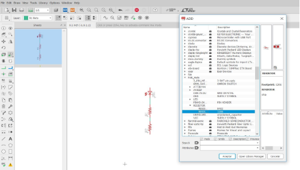
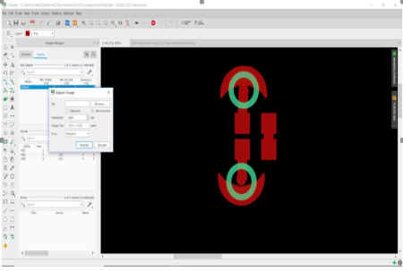
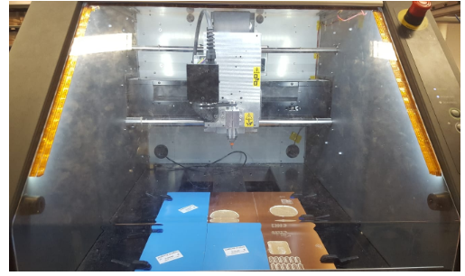
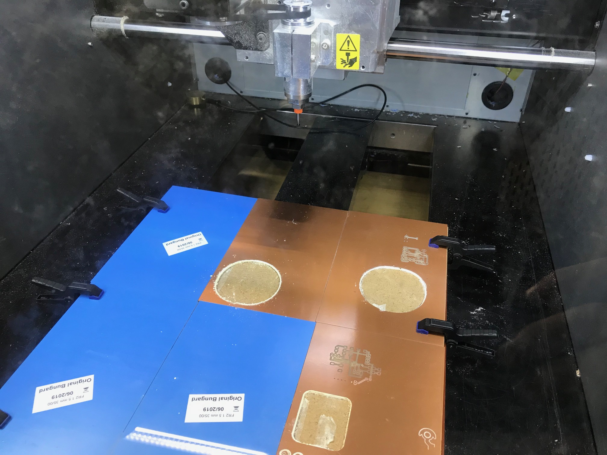

During this week, we were introduced to the program Eagle. The aim of using this program was for learning how to create our own DIY integrated circuits.
Designing our circuit.
Getting started with Eagle:The first thing that we needed to do was to download a program named Eagle. With this program lets you dessign different circuit patterns that later can be printed. Once we were inside the program, we clicked on dessign.
Once we were there, we opened the we opened the library manager and then we cliekced browese. Then, we had to import ; fab, FAB_HELLO, LilyPad-Wreables, Sparkfun and update them all. In order to be able to work with them we have to go to the left panel and click on the add symbol.
Now we want to start adding different basic circuit components.The first thing we will add are the resistors. We have to go to FAB_Hello and click on the one which has 1206 in the description. Afterward we are going to to inside the LilyPad_Wereables and we are going to click on SEWTAP and select the option Petal-Small . In order to join the different components that we are using we will use the option net ; and in order to rotate the components we will use the right button of the mouse.
The next step will be going to schematic: There is where we will generate our board. We click on the move key and try to move all the different components to the centre. Then, we rotate them and make them be as close as they can be, since the main objective is to save some space. Afterward we will have to click on the dimension feauture , which is a sign shaped as a two points arrow. In my case, my board measures 15.25 mm .
The last two steps of the design with Eagle are doing the routing and setting the layer settings. For doing the routing we select the route and change the width to 40 and set the drill to 0,35 . Then we go to layer settings and we hide the layers, select top and pads and accept. We save our file as an image
 Editing with Gimp:Gimp is a tool used to edit photographs, in a similar way to photoshop, however, Gimp is an open software tool. In order to modify the circuit we have to open the image we saved and do two different jobs:
The first thing we need to do is preparing the image . In order to do that we select the part of the image we are interested in without leaving any margin. Then with the tool image we crop the selection we just made. Since the margins of my image were not even, I had to resize it by changing the milimeters in the canvas size. Then, we choose file overwrite , close the image without saving it and then we open the image again. The last steps of the resizing are to put everything in black by making a reactangle selection and clicking on contrl + "," . We crop the image and export the file.

For compliting the first step we need to check the actual size of the image.Since we want to control that Gimp has not done any scaling, we go again to tools, selection tools, rectangle and switch from ppx to mm. Then we select the rectangle and see that the size is 2,0mm, that is close to the original size which was 2,4mm. No rescaling has been done.
Now we should work on the second step, which consicts on creating a white part and using it for the machine to cut more in that part. What we do is select rounded rectangle and switch the value to 30, then we click on on contrl + "+" , in order for the background to be white. Finally we just export our image.

Cutting the circuit.
After putting the different correct values in the website fabmodules with an USB we inserted the different content in CNC milling machine, which will cut a copper plate.
 